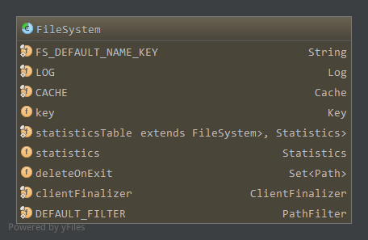
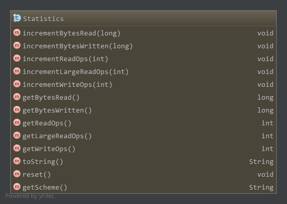
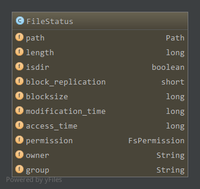
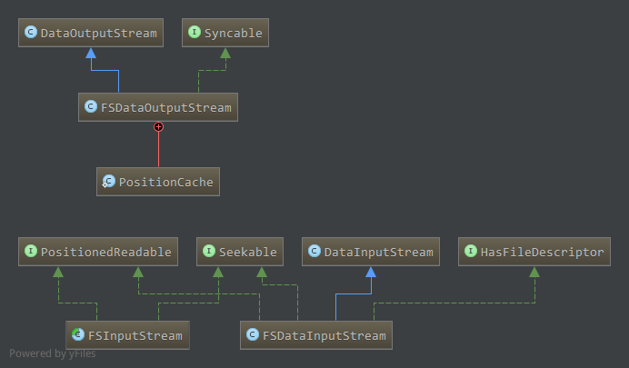
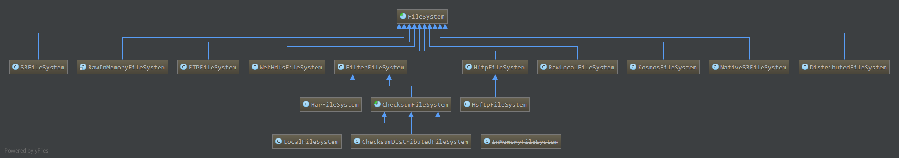
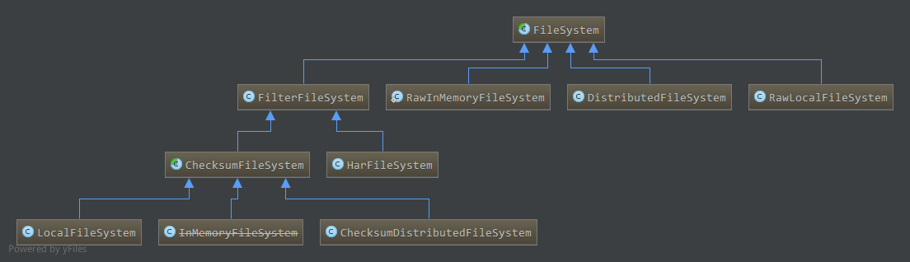

Hadoop版本:Hadoop-1.2.1
参考：《Hadoop技术内幕-深入解析Hadoop Common和HDFS架构设计与实现原理》
1. 成员属性
成员属性如下:

FS_DEFAULT_NAME_KEY，配置项fs.default.name，缺省文件系统uriCACHE，静态成员，文件系统缓存，为Cache对象，具体见下key，Cache.Key对象，为当前文件系统在CACHE中保存的键值statisticsTable，静态成员，记录每一个文件系统的统计信息，为IdentityHashMap，一个类一个统计信息对象Statisticsstatistics，当前文件系统的统计信息deleteOnExit，保存当前文件系统在关闭或虚拟机关闭时应该删除的文件clientFinalizer，静态成员，用于关闭所有缓存文件系统的线程DEFAULT_FILTER,静态成员，缺省的路径过滤器PathFilter，对于所有的路径都返回true
1.1 Cache
当我们获取文件系统时(FileSystem.get)可以直接创建新的文件系统，不过每次创建新的文件系统比较消耗资源，因此我们可以选择缓存创建的文件系统，而对于满足某些条件下的文件系统我们可以使用缓存中的文件系统。而是否直接创建还是使用缓存中的文件系统依赖于配置项fs.scheme.impl.disable.cache，其中scheme为uri的模式，如file，hdfs等，当文件系统对应的该配置项为false时，使用Cache获取文件系统，否则每次创建新的文件系统，默认情况下为false。
Cache的成员:1
private final Map<Key, FileSystem> map = new HashMap<Key, FileSystem>();
使用HashMap保存可共享的文件系统信息，键为Cache.Key，值为文件系统
因此，当使用Cache获取文件系统时，每个文件系统对应一个Cache.Key对象，由文件系统的该对象决定是否共享缓存中的文件系统。即如果要获取的文件系统对应的Cache.Key对象在缓存CACHE中存在，则使用CACHE的那个文件系统。
1.1.1 Cache.Key
一个Key由三个成员属性决定1
2
3final String scheme;//对应uri的模式(scheme)
final String authority;//对应uri的模式特有部分(scheme-specific-part)
final UserGroupInformation ugi;//用户信息
构造:1
2
3
4
5Key(URI uri, Configuration conf) throws IOException {通过uri初始化模式和模式特有部分
scheme = uri.getScheme()==null?"":uri.getScheme().toLowerCase();
authority = uri.getAuthority()==null?"":uri.getAuthority().toLowerCase();
this.ugi = UserGroupInformation.getCurrentUser();
}
比较两个Key是否相等1
2
3
4
5
6
7
8
9
10
11public boolean equals(Object obj) {
if (obj == this) {
return true;
}
if (obj != null && obj instanceof Key) {
Key that = (Key)obj;
return isEqual(this.scheme, that.scheme) && isEqual(this.authority, that.authority) && isEqual(this.ugi, that.ugi);
}
return false;
}
static boolean isEqual(Object a, Object b) { return a == b || (a != null && a.equals(b)); }
也就是说只有两个文件系统的模式，模式特有部分以及用户一样时，才能共享CACHE中已经存在的文件系统。
来看看Cache中获取文件系统的方法:1
2
3
4
5
6
7
8
9
10
11
12
13
14
15
16
17
18
19
20
21
22
23
24
25
26
27
28
29
30FileSystem get(URI uri, Configuration conf) throws IOException{
Key key = new Key(uri, conf);//根据uri创建Key
FileSystem fs = null;
synchronized (this) {
fs = map.get(key);
}
//如果存在对应的键，直接返回。
//这里注意的是HashMap中比较键使用的equals方法也就间接的通过Key的equals方法来决定是否能够使用缓存中的文件系统
if (fs != null) {
return fs;
}
fs = createFileSystem(uri, conf);//不存在，创建文件系统
synchronized (this) { // refetch the lock again
FileSystem oldfs = map.get(key);
//在我们创建该文件系统时，其他线程创建了，关闭新创建的文件系统，返回已经创建了的文件系统
if (oldfs != null) { // a file system is created while lock is releasing
fs.close(); // close the new file system
return oldfs; // return the old file system
}
// now insert the new file system into the map
if (map.isEmpty() && !clientFinalizer.isAlive()) {
Runtime.getRuntime().addShutdownHook(clientFinalizer);//添加到clientFinalizer，虚拟机退出时关闭文件系统
}
fs.key = key;
map.put(key, fs);//缓存
return fs;
}
}
如上，给定uri我们创建相应的Key，然后从Cache中查找是否存在该键，如果存在直接返回，这里因为HashMap比较键是否相等使用的是键的equals方法，因此间接的通过Key的equals方法来决定是否能够共享文件系统，即模式，模式特有部分，用户信息都一样时才会共享。而如果不存在，需要创建新的文件系统，创建完后在放入缓存之前，还要检查一遍缓存中是否已经存在该文件系统了，以防止在我们创建该文件系统时其他线程创建并添加到缓存中了。
创建新的文件系统通过createFileSystem1
2
3
4
5
6
7
8
9
10private static FileSystem createFileSystem(URI uri, Configuration conf) throws IOException {
Class<?> clazz = conf.getClass("fs." + uri.getScheme() + ".impl", null);
LOG.debug("Creating filesystem for " + uri);
if (clazz == null) {
throw new IOException("No FileSystem for scheme: " + uri.getScheme());
}
FileSystem fs = (FileSystem)ReflectionUtils.newInstance(clazz, conf);
fs.initialize(uri, conf);
return fs;
}
创建文件系统时，文件系统类为fs.scheme.impl，这里scheme为uri的模式，通过反射创建对应的文件系统，然后初始化。1
2
3
4
5
6
7
8
9
10
11public void initialize(URI name, Configuration conf) throws IOException {
statistics = getStatistics(name.getScheme(), getClass());
}
public static synchronized Statistics getStatistics(String scheme, Class<? extends FileSystem> cls) {
Statistics result = statisticsTable.get(cls);
if (result == null) {
result = new Statistics(scheme);
statisticsTable.put(cls, result);
}
return result;
}
初始化的过程即为获取统计信息对象Statistics的过程，如果该文件系统的统计信息对象已经缓存在statisticsTable中了，则直接从缓存中获取，否则创建新的对象。注意的是，statisticsTable为IdentityHashMap，键之间的比较是通过比较对象引用(即==，而不是equals)，因此只有共享的文件系统才会在statisticsTable中有缓存。
1.2 Statistics
承上，创建一个新的Statistics对象1
public Statistics(String scheme) { this.scheme = scheme; }
创建新的Statistics对象只是初始化该统计对象的模式成员，负责统计的成员如下:1
2
3
4
5private AtomicLong bytesRead = new AtomicLong();
private AtomicLong bytesWritten = new AtomicLong();
private AtomicInteger readOps = new AtomicInteger();
private AtomicInteger largeReadOps = new AtomicInteger();
private AtomicInteger writeOps = new AtomicInteger();
都为对应的原子整型，当文件系统中有相应读写操作时，通过相应increment*方法增加对应的值，通过get*方法获取对应的值。

increment*使用原子量的getAndAdd方法增加相应值，get*方法使用原子量的get方法获取值，而reset方法通过原子量的set方法重置bytesRead和bytesWritten为0。
1.3 ClientFinalizer
ClientFinalizer会关闭所有缓存的文件系统，在虚拟机退出时启动1
2
3
4
5
6
7
8
9private static class ClientFinalizer extends Thread {
public synchronized void run() {
try {
FileSystem.closeAll();
} catch (IOException e) {
LOG.info("FileSystem.closeAll() threw an exception:\n" + e);
}
}
}
FileSystem.closeAll会使用CACHE.closeAll关闭所有缓存的文件系统1
2
3
4
5
6
7
8
9
10
11
12
13
14
15
16
17
18
19
20
21
22
23
24synchronized void closeAll() throws IOException {
List<IOException> exceptions = new ArrayList<IOException>();
for(; !map.isEmpty(); ) {
Map.Entry<Key, FileSystem> e = map.entrySet().iterator().next();//获取缓存中下一个文件系统
final Key key = e.getKey();
final FileSystem fs = e.getValue();
//remove from cache
remove(key, fs);//从缓存中移除
if (fs != null) {
try {
fs.close();//调用文件系统的close方法关闭文件系统
}
catch(IOException ioe) {
exceptions.add(ioe);
}
}
}
if (!exceptions.isEmpty()) {
throw MultipleIOException.createIOException(exceptions);
}
}
1.4 PathFilter
路径过滤器，只有一个方法accept，返回true时接受该Path1
2
3public interface PathFilter {
boolean accept(Path path);
}
使用的缺省路径过滤器1
2
3
4final private static PathFilter DEFAULT_FILTER = new PathFilter() {
public boolean accept(Path file) {
return true;
}};
全部接受。
2. 获取文件系统
获取文件系统相应的方法为FileSystem中的静态方法1
2
3
4
5
6public static FileSystem get(Configuration conf) throws IOException {
return get(getDefaultUri(conf), conf);
}
public static URI getDefaultUri(Configuration conf) {
return URI.create(fixName(conf.get(FS_DEFAULT_NAME_KEY, "file:///")));
}
如上，缺省情况下，创建fs.default.name指定协议的文件系统，且默认为本地文件系统file，我们一般在配置的时候使用HDFS配置该项为”hdfs://…”。1
2
3
4
5
6
7
8
9public static FileSystem get(URI uri, Configuration conf) throws IOException {
...//uri对应的模式或模式特有部分不存在，使用缺省的值
String disableCacheName = String.format("fs.%s.impl.disable.cache", scheme);
if (conf.getBoolean(disableCacheName, false)) {
return createFileSystem(uri, conf);
}
return CACHE.get(uri, conf);
}
如上，对于给定uri的协议，如果配置了对应的fs.scheme.impl.disable.cache为true，这里scheme为uri的模式，则直接通过createFileSystem创建文件系统，否则通过CACHE获取共享的文件系统。两者都在前面已经分析过了，CACHE获取文件系统时，如果存在则直接返回，否则创建新的文件系统。
创建新的文件系统时，由配置项fs.scheme.impl决定文件系统所属类，通过反射创建文件系统对象，然后在初始化过程中创建文件系统对应的统计对象并注册到缓存statisticsTable中。
另外，可以通过FileSystem.getLocal获取一个本地文件系统1
2
3public static LocalFileSystem getLocal(Configuration conf) throws IOException {
return (LocalFileSystem)get(LocalFileSystem.NAME, conf);
}
LocalFileSystem.NAME如下1
static final URI NAME = URI.create("file:///");
模式为file，因此会获得fs.file.impl对应的文件系统。
3. 文件系统操作
下表摘自<技术内幕>P171
| Hadoop文件系统 | Java | Linux | 描述 |
|---|---|---|---|
| URL.openStream FileSystem.open FileSystem.create FileSystem.append |
URL.openStream | open | 打开一个文件 |
| FSDataInputStream.read | InputStream.read | read | 读取文件中的数据 |
| FSDataOutputStream.write | OutputStream.write | write | 向文件中写数据 |
| FSDataOutputStream.close FSDataInputStream.close |
InputStream.close OutputStream.close |
close | 关闭一个文件 |
| FSDataInputStream.seek | RandomAccessFile.seek | lseek | 改变文件读写位置 |
| FileSystem.getFileStatus FileSystem.get* |
File.get* | stat | 获取文件/目录的属性 |
| FileSystem.set* | File.set* | chmod等 | 修改文件属性 |
| FileSystem.createNewFile | File.createNewFile | create | 创建一个文件 |
| FileSystem.delete | File.delete | remove | 从文件系统中删除一个文件 |
| FileSystem.rename | File.renameTo | rename | 更改文件/目录名 |
| FileSystem.mkdirs | File.mkdir | mkdir | 在给定目录下创建一个子目录 |
| FileSystem.delete | File.delete | rmdir | 从一个目录中删除一个空的子目录 |
| FileSystem.listStatus | File.list | readdir | 读取一个目录下的项目 |
| FileSystem.getWorkingDirectory | N/A | getcwd/getwd | 返回当前工作目录 |
| FileSystem.setWorkingDirectory | N/A | chdir | 更改当前工作目录 |
FileSystem为抽象文件系统，对应的实际操作都是抽象方法，需要具体文件系统实现。
3.1 open，create，append
都有许多重载，不过最终的方法都是抽象的。1
public abstract FSDataInputStream open(Path f, int bufferSize) throws IOException;
只有两个重载，至少指定Path f。bufferSize缺省为配置项io.file.buffer.size(默认4096)。1
2
3public abstract FSDataOutputStream create(Path f,FsPermission permission,
boolean overwrite, int bufferSize,short replication,long blockSize,
Progressable progress) throws IOException;
最简单的可以只给定Path f。
缺省状态下，permission为FsPermission的缺省权限(777)，overwrite为true，bufferSize为配置项io.file.buffer.size(默认4096)，replication为1，blockSize为配置项fs.local.block.size(默认32MB)，progress为null。1
public abstract FSDataOutputStream append(Path f, int bufferSize, Progressable progress) throws IOException;
三个重载，至少指定Path f。bufferSize默认为配置项io.file.buffer.size(默认4096)，progress默认null。
其他的如mkdir，delete，set*,get*设置或获取元信息，getWorkingDirectory等方法都是抽象的，不再分析
3.2 文件状态FileStatus
getFileStatus获取文件的FileStatus，参数可以为一个路径Path，也可以为Path数组1
2public abstract FileStatus getFileStatus(Path f) throws IOException;
private FileStatus[] getFileStatus(Path[] paths) throws IOException
路径为数组依赖于一个路径实现，即对每一个Path调用getFileStatus(Path)返回其状态，而getFileStatus(Path)为抽象方法。
listStatus获取文件或目录的状态，返回FileStatus数组，如果为文件则数组中一个元素。同时还支持对路径过滤的重载形式1
2
3
4
5
6
7
8
9
10
11
12
13
14
15
16
17
18
19
20
21public abstract FileStatus[] listStatus(Path f) throws IOException;
private void listStatus(ArrayList<FileStatus> results, Path f, PathFilter filter) throws IOException {
FileStatus listing[] = listStatus(f);//路径下的文件状态
if (listing != null) {
for (int i = 0; i < listing.length; i++) {
if (filter.accept(listing[i].getPath())) {//使用PathFilter进行过滤，accept返回true时添加到results中返回
results.add(listing[i]);
}
}
}
}
public FileStatus[] listStatus(Path[] files) throws IOException {//缺省PathFilter，对所有的Path返回true
return listStatus(files, DEFAULT_FILTER);
}
public FileStatus[] listStatus(Path[] files, PathFilter filter) throws IOException {//对files中每一个Path执行listStatus以及过滤操作
ArrayList<FileStatus> results = new ArrayList<FileStatus>();
for (int i = 0; i < files.length; i++) {
listStatus(results, files[i], filter);
}
return results.toArray(new FileStatus[results.size()]);
}
全都依赖于抽象方法listStatus(Path)，使用PathFilter时，对列出的文件进行过滤，指定路径在PathFilter的accept中返回true时，才会出现在最终的返回列表中。
FileStatus对象包含了文件或目录的状态：

依次为路径，长度，是否为目录标记，区块备份数，区块大小，修改时间，访问时间，权限，拥有者，所在组信息。
其中权限为FsPermission对象，以POSIX风格方式表示权限。
3.2.1 FsPermission
FsPermission包含三个成员分别表示拥有者，所在组，其他成员的权限:1
2
3private FsAction useraction = null;
private FsAction groupaction = null;
private FsAction otheraction = null;
每个权限都是FsAction枚举。
将三个权限值转换为POSIX形式以short数值存储:1
2
3
4public short toShort() {
int s = (useraction.ordinal() << 6) | (groupaction.ordinal() << 3) | otheraction.ordinal();
return (short)s;
}
如上ordinal返回对应枚举值的序数。
对应的通过表示权限值的short数值来设置FsPermission的三个权限值:1
2
3
4
5
6
7
8
9public void fromShort(short n) {
FsAction[] v = FsAction.values();
set(v[(n >>> 6) & 7], v[(n >>> 3) & 7], v[n & 7]);
}
private void set(FsAction u, FsAction g, FsAction o) {
useraction = u;
groupaction = g;
otheraction = o;
}
静态方法获取缺省的权限1
2
3
4public static FsPermission getDefault() {
return new FsPermission((short)0777);
}
public FsPermission(short mode) { fromShort(mode); }
即缺省情况下，所有者，所有者所在组，其他用户都拥有读写执行的权限。
3.2.2 FsAction
FsAction包含以下可能的权限类型:1
2
3
4
5
6
7
8
9
10public enum FsAction {
// POSIX style
NONE("---"),
EXECUTE("--x"),
WRITE("-w-"),
WRITE_EXECUTE("-wx"),
READ("r--"),
READ_EXECUTE("r-x"),
READ_WRITE("rw-"),
ALL("rwx");
以上，分别对应0-7。FsAction含有两个成员:1
2private final static FsAction[] vals = values();//所有可能枚举值
public final String SYMBOL;//当前枚举代表的字符串
构造函数如下:1
private FsAction(String s) { SYMBOL = s; }
权限的与或非操作:1
2
3public FsAction and(FsAction that) { return vals[ordinal() & that.ordinal()]; }
public FsAction or(FsAction that) { return vals[ordinal() | that.ordinal()]; }
public FsAction not() { return vals[7 - ordinal()]; }
ordinal返回对应枚举值的序数，如上NONE对应为0，ALL对应为7。
另外还提供了implies方法，检查当前权限是否隐含给定的权限，如权限WRITE_EXECUTE隐含WRITE和EXECUTE。1
2
3
4
5
6public boolean implies(FsAction that) {
if (that != null) {
return (ordinal() & that.ordinal()) == that.ordinal();
}
return false;
}
4. 文件系统关闭
文件系统关闭通过close方法完成1
2
3
4
5
6
7
8
9
10
11
12
13
14
15
16
17
18
19public void close() throws IOException {
processDeleteOnExit();
CACHE.remove(this.key, this);
LOG.debug("Removing filesystem for " + getUri());
}
protected void processDeleteOnExit() {
synchronized (deleteOnExit) {
for (Iterator<Path> iter = deleteOnExit.iterator(); iter.hasNext();) {
Path path = iter.next();
try {
delete(path, true);
}
catch (IOException e) {
LOG.info("Ignoring failure to deleteOnExit for path " + path);
}
iter.remove();
}
}
}
如上，删除deleteOnExit管理的路径，然后从缓存中移除。FileSystem的close方法可能被ClientFinalizer线程在虚拟机退出的时候调用，将关闭所有缓存的文件系统。
5. 文件系统流
Hadoop文件系统中，读取文件数据的输入流是FSDataInputStream，写文件数据的输出流是FSDataOutputStream，另外还有一个抽象流FSInputStream。
FSDataInputStream可以通过FileSystem.open方式打开，而FSDataOutputStream可以通过FileSystem.create或FileSystem.append方式打开。
相关类图如下:

FSInputStream实现了Seekable接口和PositionedReadable接口。
Seekable接口提供了在流中进行随机存取的方法，类似于RandomAccessFile中的getFilePointer和seek方法，提供了随机定位文件读取位置的能力。
PositionedReadable接口提供了从流中某一个位置开始读数据的一系列方法，不过这个从指定位置读不会改变原来的position。
5.1 Seekable
1 | public interface Seekable { |
如上，包含三个方法，其中seekToNewSource用于在文件系统中重新选择一个可用副本。
5.2 PositionedReadable
1 | public interface PositionedReadable { |
如上，包含read和readFully，两者从position处开始读取数据，但不改变当前position。可以通过实现Seekable接口的流，读取前保存当前位置，然后seek到指定位置读取，读取完成后seek回保存的位置。
5.3 FSInputStream
FSInputStream对应为Hadoop抽象文件系统中的抽象输入流，实现了Seekable接口和PositionedReadable接口。1
2
3
4
5
6
7
8
9
10
11
12
13
14
15
16
17
18
19
20
21
22
23
24
25
26
27
28
29
30
31
32
33
34public abstract class FSInputStream extends InputStream implements Seekable, PositionedReadable {
public abstract void seek(long pos) throws IOException;
public abstract long getPos() throws IOException;
public abstract boolean seekToNewSource(long targetPos) throws IOException;
public int read(long position, byte[] buffer, int offset, int length) throws IOException {
synchronized (this) {
long oldPos = getPos();//保存当前位置
int nread = -1;
try {
seek(position);//定位到指定位置
nread = read(buffer, offset, length);//读取数据
} finally {
seek(oldPos);//定位到保存位置
}
return nread;
}
}
public void readFully(long position, byte[] buffer, int offset, int length) throws IOException {
int nread = 0;
while (nread < length) {//循环读取直到读完指定长度数据或达到流尾部
int nbytes = read(position+nread, buffer, offset+nread, length-nread);
if (nbytes < 0) {
throw new EOFException("End of file reached before reading fully.");
}
nread += nbytes;
}
}
public void readFully(long position, byte[] buffer) throws IOException {
readFully(position, buffer, 0, buffer.length);
}
}
如上，简单的通过Seekable中的seek方法配合实现了read和readFully方法，具体的Seekable中的方法需要子类实现。
5.4 BufferedFSInputStream
与BufferedInputStream类似，不过是对FSInputStream的缓冲，读取数据时从内部缓冲中读取，若没有剩余数据则从底层FSInputStream中读取到缓冲区，然后读取。对于读取指定字节的情况，如果缓冲区没有数据且要读取数据大小大于缓冲区大小，直接从底层流中读取。
该流继承BufferedInputStream实现了Seekable, PositionedReadable, HasFileDescriptor接口1
public class BufferedFSInputStream extends BufferedInputStream implements Seekable, PositionedReadable, HasFileDescriptor
5.4.1 构造
1 | public BufferedFSInputStream(FSInputStream in, int size) { |
调用父类的构造函数，创建内部字节数组。
5.4.2 Seekable实现
1 | public long getPos() throws IOException { |
注意的是，当前实际流的位置应该考虑内部缓冲区，缓冲区中还有(count-pos)大小数据没有读取。1
2
3
4
5
6
7
8
9
10
11
12
13
14
15
16
17public void seek(long pos) throws IOException {
if( pos<0 ) {
return;
}
long end = ((FSInputStream)in).getPos();//缓冲区结束位于流中的位置
long start = end - count;//缓冲区开始数据位于流中的位置
if( pos>=start && pos<end) {//pos在缓冲区中
this.pos = (int)(pos-start);//只需改变缓冲区的pos值即可
return;
}
//pos不在缓冲区中，pos，count置0，将在下次读取数据时重新填充缓冲区
this.pos = 0;
this.count = 0;
((FSInputStream)in).seek(pos);//使用FSInputStream子类实现的seek方法
}
如上，如果在缓冲区内，直接改变pos值即可，需要重新定位，因此清空缓冲区，在下次读取数据时从底层流中读取数据填充缓冲区。1
2
3
4
5public boolean seekToNewSource(long targetPos) throws IOException {
pos = 0;
count = 0;
return ((FSInputStream)in).seekToNewSource(targetPos);
}
切换到新的源时，缓冲区清空，使用底层FSInputStream子类实现的seekToNewSource进行切换。
5.4.3 PositionedReadable, HasFileDescriptor实现
直接使用传入的FSInputStream实现类的相应方法
5.4.4 skip
1 | public long skip(long n) throws IOException { |
使用seek方法跳过。
这里为什么不直接使用BufferedInputStream的skip方法而要重写呢，BufferedInputStream中的markSupported为true，即支持mark的，覆盖了底层流FSInputStream的markSupported方法，如果skip时mark值有效，而getPos()+n超出了缓冲区，通过seek直接改变了底层流的位置，是否会在之后reset重新读取数据时丢失数据?
5.5 FSDataInputStream
可以看做是对Hadoop具体文件系统输入流的统一封装，即具体文件系统有其自己对应的输入流，实现了Seekable，PositionReadable接口的功能，将具体
文件系统对应的输入流封装成FSDataInputStream统一文件系统输入流的名字，然后在此基础上增加了DataInput接口指定的功能
构造:1
2
3
4
5
6public FSDataInputStream(InputStream in) throws IOException {
super(in);
if( !(in instanceof Seekable) || !(in instanceof PositionedReadable) ) {
throw new IllegalArgumentException("In is not an instance of Seekable or PositionedReadable");
}
}
传入的底层流要实现Seekable接口和PositionReadable接口，然后其相应的方法直接使用底层流的对应方法，是否跟FilterInputStream对底层流的封装很类似。
相应的方法实现:1
2
3
4
5
6
7
8
9
10public synchronized void seek(long desired) throws IOException { ((Seekable)in).seek(desired); }
public long getPos() throws IOException { return ((Seekable)in).getPos(); }
public boolean seekToNewSource(long targetPos) throws IOException { return ((Seekable)in).seekToNewSource(targetPos); }
public int read(long position, byte[] buffer, int offset, int length) throws IOException {
return ((PositionedReadable)in).read(position, buffer, offset, length);
}
public void readFully(long position, byte[] buffer, int offset, int length) throws IOException {
((PositionedReadable)in).readFully(position, buffer, offset, length);
}
另外，FSDataInputStream还实现了HasFileDescriptor接口，返回对应的文件描述符对象1
2
3public interface HasFileDescriptor {
public FileDescriptor getFileDescriptor() throws IOException;
}
同样的，其方法实现也依赖于底层的流1
2
3
4
5
6
7
8
9public FileDescriptor getFileDescriptor() throws IOException {
if (in instanceof HasFileDescriptor) {//底层流实现了HasFileDescriptor，调用相应方法
return ((HasFileDescriptor) in).getFileDescriptor();
} else if (in instanceof FileInputStream) {//底层流为文件输入流，返回对应的文件描述符对象
return ((FileInputStream) in).getFD();
} else {
return null;
}
}
5.6 FSDataOutputStream
FSDataOutputStream实现了类似于Linux中的sync的功能，将流中保存的数据同步到设备中，实现DataOutput接口，支持相应的写操作。不支持随机写但是通过内部类PositionCache能够获取当前写的位置。
成员wrappedStream保存了传入的底层流1
private OutputStream wrappedStream;
构造:1
2
3
4
5
6
7
8
9
10public FSDataOutputStream(OutputStream out) throws IOException {
this(out, null);
}
public FSDataOutputStream(OutputStream out, FileSystem.Statistics stats) throws IOException {
this(out, stats, 0);
}
public FSDataOutputStream(OutputStream out, FileSystem.Statistics stats, long startPosition) throws IOException {
super(new PositionCache(out, stats, startPosition));//构建PositionCache对象
wrappedStream = out;
}
因此，默认情况下会将给定的底层流封装成PositionCache对象，交给DataOutput。
PositionCache是一个FilterOutputStream，提供了获取当前写位置以及一些统计信息的功能。1
2
3
4
5
6
7
8
9
10
11
12
13
14
15
16
17
18
19
20
21
22
23
24
25
26
27
28
29
30
31
32
33
34private static class PositionCache extends FilterOutputStream {
private FileSystem.Statistics statistics;//统计信息
long position;//当前写位置
public PositionCache(OutputStream out, FileSystem.Statistics stats,long pos) throws IOException {
super(out);
statistics = stats;
position = pos;
}
public void write(int b) throws IOException {//写数据的时候响应的增加当前写位置，并更新统计信息
out.write(b);
position++;
if (statistics != null) {
statistics.incrementBytesWritten(1);
}
}
public void write(byte b[], int off, int len) throws IOException {
out.write(b, off, len);
position += len; // update position
if (statistics != null) {
statistics.incrementBytesWritten(len);
}
}
public long getPos() throws IOException {
return position; // return cached position
}
public void close() throws IOException {
out.close();
}
}
如上，写数据时相应的改变当前写位置以及更新统计信息。
因此，FSDataOutputStream获取当前写位置的方法，也是直接使用PositionCache的getPos方法1
2
3
4
5
6
7public long getPos() throws IOException {
return ((PositionCache)out).getPos();
}
public void close() throws IOException {
out.close(); // This invokes PositionCache.close()
}
而同步相关的也依赖于传入的底层流实现，若支持Syncable接口，直接调用相应的sync方法，否则通过输出流的flush方法刷新1
2
3
4
5
6
7public void sync() throws IOException {
if (wrappedStream instanceof Syncable) {
((Syncable)wrappedStream).sync();
} else {
wrappedStream.flush();
}
}
6. 文件系统实现
目前(1.2.1)实现如下:

后面的具体文件系统分析侧重于:

7. 疑问
见前面文件系统流->BufferedFSInputStream->skip方法描述